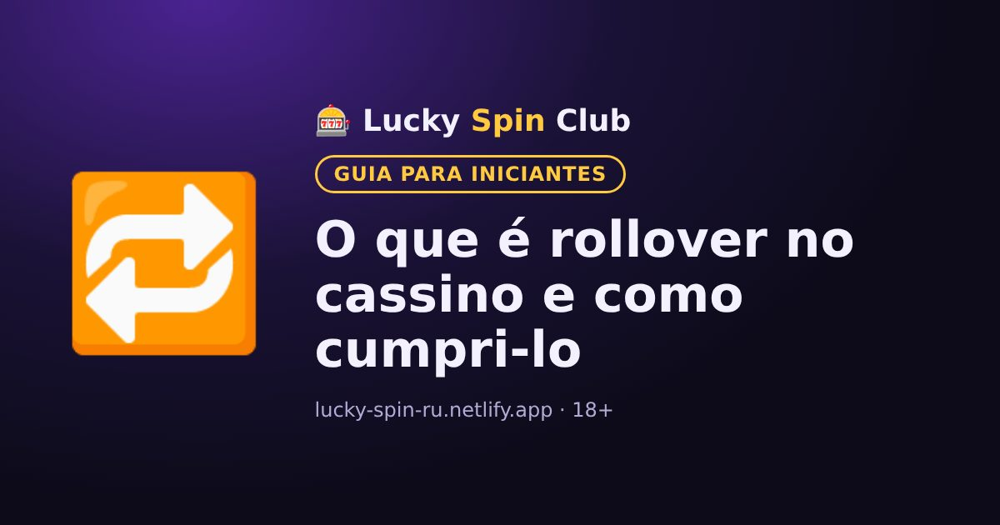

O que é rollover no cassino e como cumpri-lo

Atualizado: 6 de novembro de 2026
Quase todo bônus de cassino tem rollover. Se você não entender isso antes, é fácil perder o bônus. Veja com exemplos.
Definição simples
O rollover mostra quantas vezes você precisa apostar o valor do bônus antes que o dinheiro do bônus vire dinheiro real que pode ser sacado.
Exemplo
Você recebeu um bônus de R$100 com rollover x30. O total a apostar é 100 × 30 = R$3.000. Isso não significa gastar R$3.000 do seu dinheiro: todas as apostas contam, inclusive as feitas com ganhos.
Às vezes o rollover é calculado sobre o bônus mais o depósito. Com depósito de R$100 e bônus de R$100 em x30, seria preciso apostar (100 + 100) × 30 = R$6.000. As condições do bônus dizem como é calculado.
Contribuição dos jogos
Os jogos contam de forma diferente. Caça-níqueis costumam contar 100%, enquanto roleta, blackjack e jogos ao vivo contam de 0 a 20% ou nada. A lista está nas regras do bônus.
Regras importantes
- Prazo. O bônus precisa ser cumprido em um prazo, por exemplo 7 ou 30 dias; depois ele expira.
- Aposta máxima. Com o bônus ativo, a aposta não pode passar de um limite. Quebrar a regra pode cancelar o bônus e os ganhos.
- Saque máximo. Alguns bônus limitam quanto pode ser sacado após o rollover.
O bônus vale a pena?
Quanto menor o rollover e maior o prazo, mais fácil cumpri-lo. Se as condições não servirem para você, é possível recusar o bônus e jogar com seu dinheiro sem restrições.
🧮 Calcule seu bônus: nossa calculadora mostra quanto apostar e se o bônus compensa.
Abrir a calculadoraQuer experimentar? O cadastro leva cerca de um minuto.
🎁 Cadastrar e pegar o bônusPerguntas frequentes
O que significa rollover x35?
Significa que o valor do bônus precisa ser apostado 35 vezes. Para um bônus de R$100, é preciso apostar R$3.500 no total.
Todos os jogos contam para o rollover?
Não. Caça-níqueis costumam contar 100%, e jogos de mesa e ao vivo contam parcialmente ou nada. A lista está nas regras do bônus.
O que acontece se eu não cumprir o rollover no prazo?
Quando o prazo acaba, o bônus e os ganhos ligados a ele normalmente expiram.